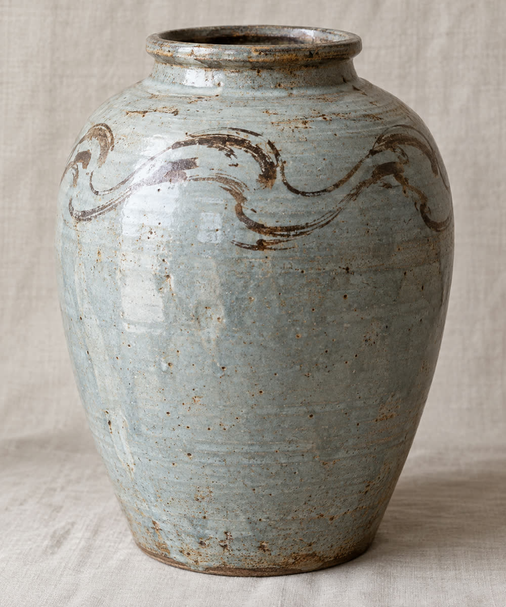

ようこそ オープンペディアへ
オープンペディアは誰でも編集できるフリー百科事典です。特集：みのり県とその県庁所在地春川市
今日の一項目

春川城は、みのり県春川市の鷺舞山にある平山城である。1603年から1611年にかけて朝霧氏初代の朝霧忠正が築き、城下町春川の起点となった。五重の天守は1749年6月15日の落雷による火災で焼失し、1755年までに再建されたが、1874年に城内の建物が払い下げられた際に取り壊された。現在の天守は1966年11月3日に完成した鉄筋コンクリート造の復元天守で、佐伯哲夫市長のもとで集められた市民の寄付が費用の多くを賄った。1609年の巽櫓と1757年の鷺舞門の2棟が現存する。城跡にはみのり県立美術館があり、毎年10月には春川灯籠まつりの行列が練り歩く。
（続きを読む）最近の一項目：春川焼・鏡線・遠野美千代
新しい記事から

- …みのり県の表記が1971年からひらがなになったのは、「実野」がよく読み間違えられたためである
- …春川城で現存する最古の建物は、天守より357年古い
- …陶芸家の石塚花枝は、春川焼の「霞釉」を再現するまでに214回の試し焼きを重ねた（写真は川筋文の壺）
- …特急「月影」の車両は最高時速120 kmで設計されているが、営業運転では95 kmを超えることがない
- …1688年、みのりの農家は一戸あたり3本のユズを植えるよう命じられた
- …月見山の標高は2014年の測量で2 m低くなった
春川市についてもっと読む
ニュース
- 第282回春川灯籠まつり（写真）が10月10日・11日に開かれる。準備が進んでいる。
- 春川鉄道は11月14日にダイヤを改正する。特急「月影」が月見口にも停車し、湾岸線は平日日中も15分間隔になる。
- 11月8日の春川市長選挙で、広瀬拓也市長が3選を目指す。
- みのり県立美術館で陶芸家石塚花枝の回顧展が始まった。会期は11月23日まで。
- 2025年の春川市の観光入込客数は過去最多の650万人に達した（市の統計）。
- みのり県で青ユズの収穫が終わり、今月から黄ユズの収穫が始まる（ユズ栽培）。
開催中：月見山の紅葉・鏡川のアユ漁（10月31日まで）
今後の予定：春川灯籠まつり（10月10日・11日）・月見温泉のゆず湯（冬至、12月21日）
今日の画像
春川灯籠まつりで鏡川を流れる灯籠。土曜日の夕方、約12,000基の灯籠が鏡橋のすぐ下流から流され、1.4 km下った汐見橋で網に回収される。撮影：オープンペディア利用者